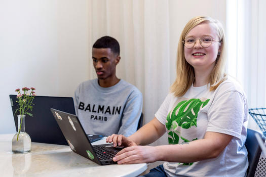

Välkommen till min lilla sida!
Detta är ett projektarbete för kurserna HTML och CSS samt JavaScript grundkurs i fullstack-utvecklarprogrammet av Företagsuniversitetet. När det kommer till att programmera saker så får jag just nu idéer som inte nödvändigtvis passar så bra ihop så varför inte göra en sida med lite smått och gott?
Jag valde att använda mig av grid för att göra hemsidan responsiv då jag upplever att det ger mig mer kontroll över positionering än vad flex gör. Jag tyckte däremot att flexbox fungerar väldigt bra för att kontrollera saker inom grid. Exempelvis i headern.